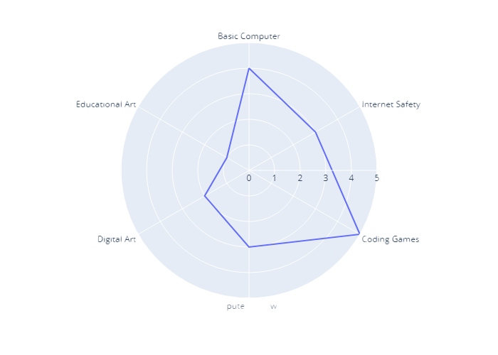

Core IT - Entry level for kids aged 8 - 10.
The concept of an IT entry-level position may not be applicable in the traditional sense. At this age, the focus should be on introducing children to basic computer literacy and technology concepts in a fun and engaging manner. Some suitable activities and learning experiences for a kid to explore the world of IT include:
The course is conducted entirely online through the Slack platform. The lessons will be hands-on and highly engaging and interactive. One group will have maximum 5 students . Each lesson has a duration of approximately 50-60 minutes , which is roughly equivalent to one hour, twice per week. The Core IT - Entry course typically spans a period of 4-5 months, although the exact duration may vary from one student to another. The student's ability to complete the course more rapidly than their peers enables them to progress to a higher-level group or course such as Core IT - Intermediate . Each student will receive personalized attention and support throughout the course.
Given that the lessons will be held online, as previously mentioned, course materials will be accessible through screen sharing. These materials consist of PowerPoint presentations that are regularly updated with the latest information. The key essentials for students will include owning a laptop and having a notebook at their disposal. The software they are going to use during lessons will be absolutely free to use.
Quizzes: (every 2 weeks) Regular quizzes will be administered to assess students' comprehension of course material and to reinforce key concepts. These quizzes will typically cover recent topics and serve as a form of ongoing assessment.
To enroll in the course, please get in touch with me through either WhatsApp, Telegram, or Email (buttons are below ). Once you've contacted, I'll provide you with all the necessary details and information. The cost for the Core IT Entry course is 350 AZN per month per student. I also offer discounts for students from the same family. The payment should be made at the beginning of the course.
Rustam Karimov
